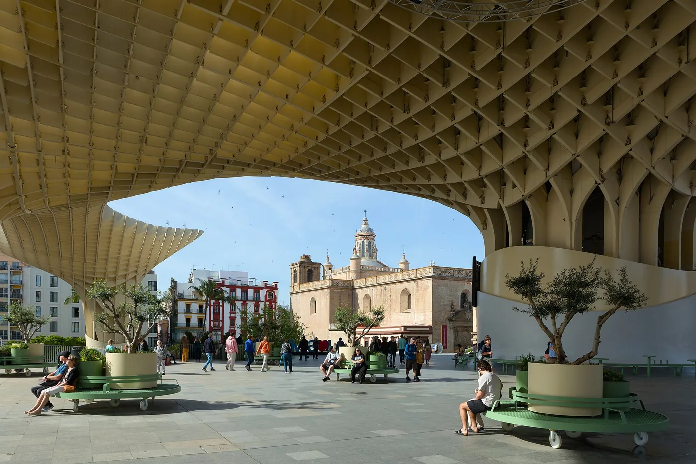
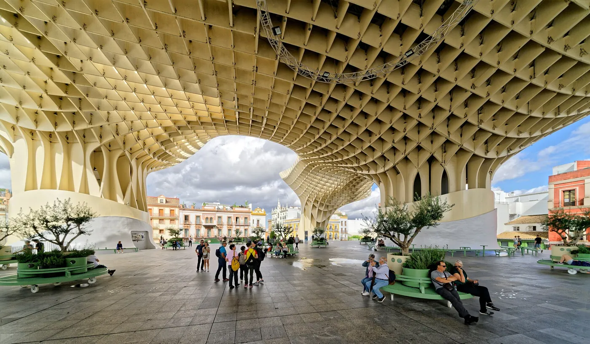
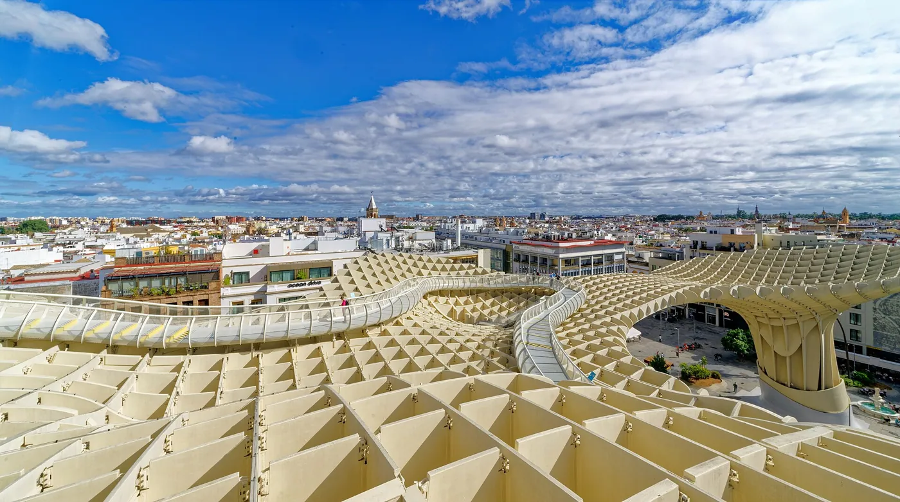
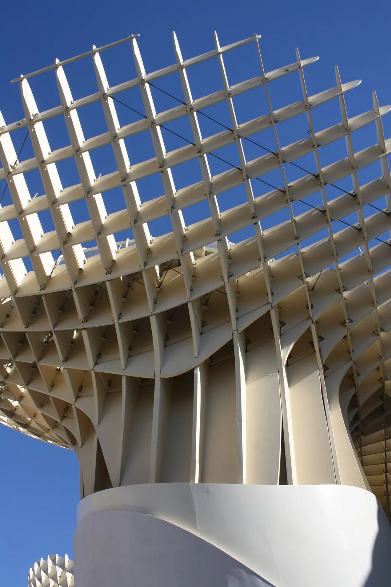
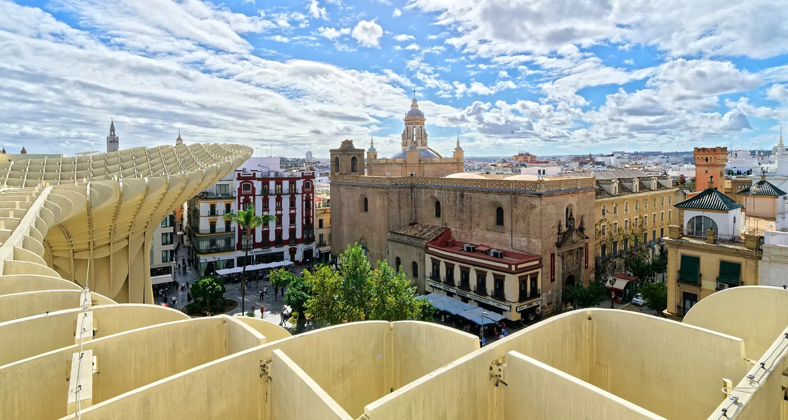
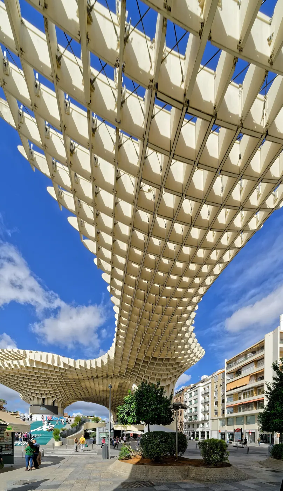

1/8 · Exterior · Metropol Parasol, Seville, SpainPhoto: kallerna · CC BY-SA 4.0 · source2/8 · Exterior · The Metropol Parasol in SevillaPhoto: Holger Uwe Schmitt · CC BY-SA 4.0 · source

3/8 · Exterior · Seville (Andalusia, Spain) - View of Iglesia de la Anunciación from under Metropol ParasolPhoto: Benjamin Smith · CC BY-SA 4.0 · source

4/8 · Exterior · The Metropol Parasol in SevillaPhoto: Holger Uwe Schmitt · CC BY-SA 4.0 · source

5/8 · Context · The Metropol Parasol in SevillaPhoto: Holger Uwe Schmitt · CC BY-SA 4.0 · source

6/8 · Context · The Metropol Parasol in SevillaPhoto: Holger Uwe Schmitt · CC BY-SA 4.0 · source

7/8 · Context · The Metropol Parasol in SevillaPhoto: Holger Uwe Schmitt · CC BY-SA 4.0 · source

8/8 · Detail · The Metropol Parasol in SevillaPhoto: Holger Uwe Schmitt · CC BY-SA 4.0 · source